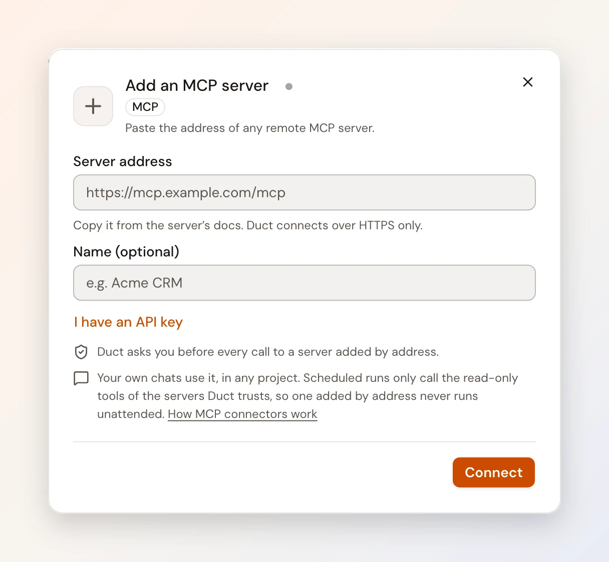

Bring your own MCP servers.
Let the agent call them.
Connect the tools you already use in one click, or any remote MCP server by its address. Then ask Duct's agent in plain words.
Free with your own model keys, on macOS, Windows and Linux.
Want the other direction, Duct inside Claude Code or Cursor? Use Duct from your agent →
Read-only tools run straight away
- OpenSEO
- Notion
- Linear
- PostHog
When the vendor marks a tool read-only. Their other tools ask you first.
Every call asks you first
 Railway
Railway Cloudflare
Cloudflare- Any other server
Railway and Cloudflare reads can return your secrets, and Duct can't vouch for a server it doesn't list.
Connect one in three steps
Open the Toolbox
In the Duct app, open the Toolbox.
Pick a server or paste its address
Choose one of the six, search the Toolbox for another, or paste any server's https address.
Sign in once
One click where the server supports it. Otherwise paste an API key from the vendor.
Then ask in the chat.

Scheduled runs only read
Nobody is there to approve a call, so a scheduled run gets only the tools that need no approval.
| Your chatsInsights and Content Studio, in any project | Every server you connected, with the asks above. |
|---|---|
| A scheduled content plan | OpenSEONotionLinearPostHog Their read-only tools, nothing else. |
| The Analytics report | OpenSEOPostHog Their read-only tools, when you tick them as a source. |
| Scheduled briefs | Not yet. |
Questions, and what an error means
It says “Duct only connects to servers on the public internet”
The address points at your own computer or a private network. Duct calls servers from the cloud, so it reaches public https addresses only. Servers that run locally over stdio don't work either.
It asks for an API key
The server offers no one-click sign-in Duct can use. Create a key in the vendor's settings and paste it in the same dialog. Duct saves it encrypted and sends it only to that server.
It says “Needs reconnecting”
The sign-in expired, or was revoked on the vendor's side. Press Reconnect in the Toolbox and sign in again.
Does the model see my keys?
No. Sign-ins and keys stay encrypted on Duct's side and travel with the call. What a server sends back is read as data, never as instructions.
Can people I share a project with use my servers?
No. A server belongs to the person who connected it, and only their own chats use it. A teammate connects their own.
Does a tool call cost anything?
Some do, with the vendor. An OpenSEO research call spends your OpenSEO credits, the same as it would from any other app.
How is this different from Claude or ChatGPT connectors?
Their directories list mostly the same vendor servers. Duct connects to those servers directly, with whichever model you bring.
Ask your tools from one chat.
Download Duct, open the Toolbox and connect the first server you already pay for.
Download Duct ↓